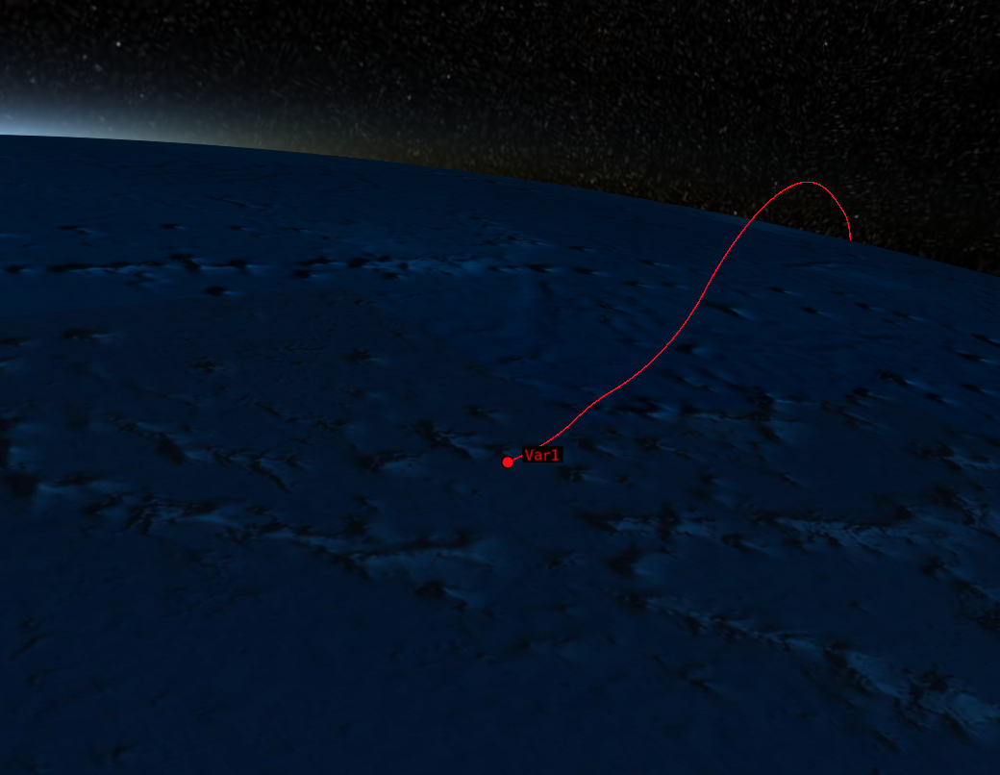
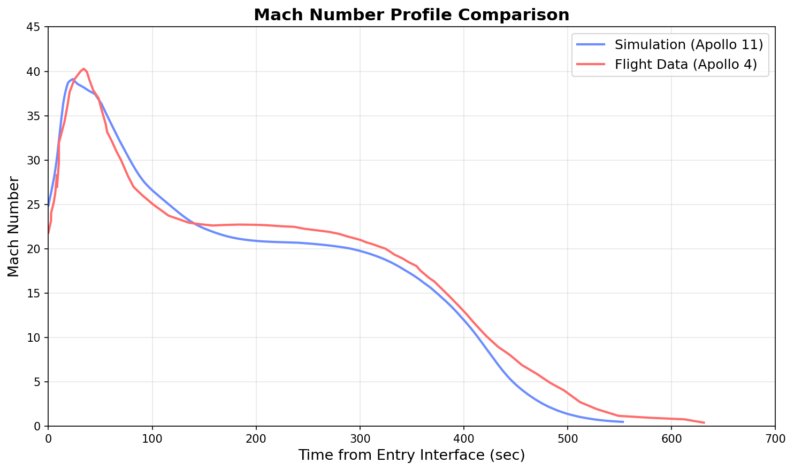
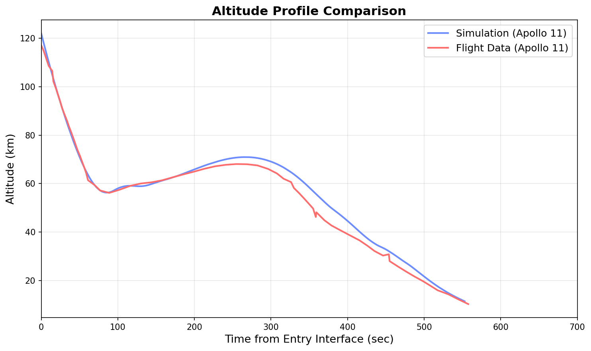

Apollo 11 6-DOF Reentry Simulator
This was a project I chose for my planetary entry and descent course at Georgia Tech. The simulator models the Apollo 11 Command Module reentry as a 6-DOF rigid body using quaternion kinematics from entry interface down to parachute deployment. Aerodynamic coefficients are extracted as functions of angle of attack and sideslip and fitted with degree-9 polynomials, while a proportional closed-loop controller tracks the commanded bank angle profile from the original Apollo 11 flight data.
The simulation incorporates NASA GRAM for atmospheric density, EGM96 with GeographicLib for gravity and coordinate transformations, and the SOFA library for ECI-to-ECEF frame conversions. Simulation results for latitude, longitude, altitude, Mach number, angle of attack, sideslip, flight path angle, and bank angle are compared against the Apollo 11 flight data.



